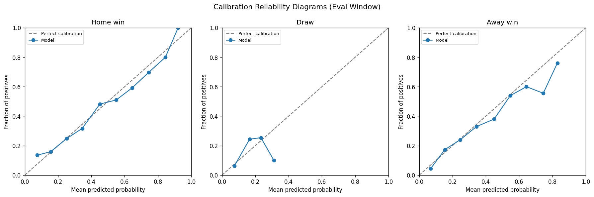
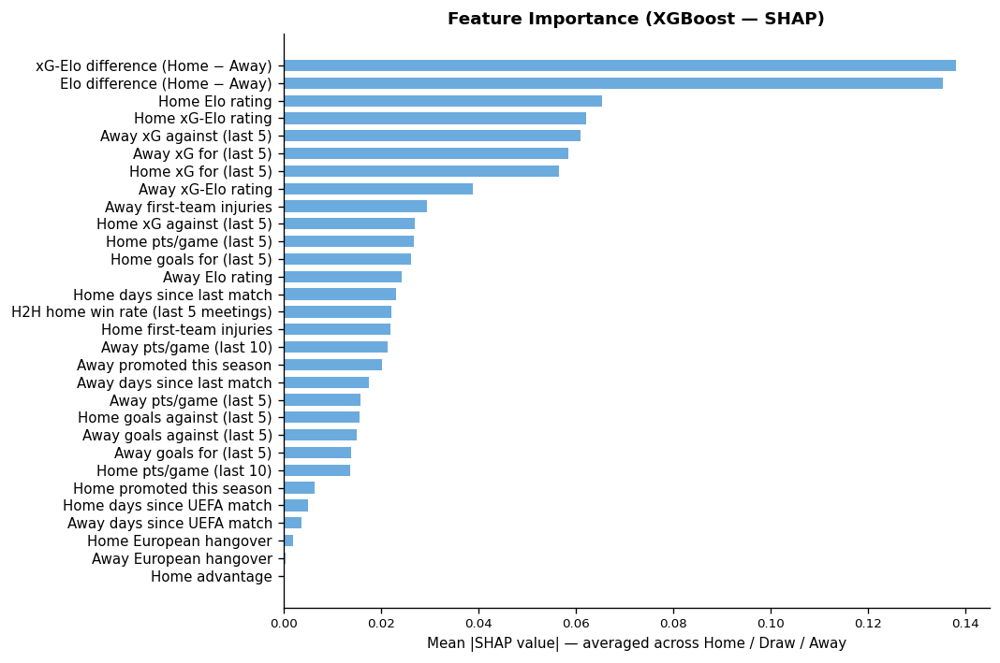

A concise summary of the method, performance metrics, and gambling returns on the unseen test set.
The model uses two Elo systems: a standard result-based Elo (W=1, D=0.5, L=0, K=20) with a 75-point home advantage, and an xG-based Elo updated using expected goals share. Features include Elo deltas, rolling points-per-game (last 5 and 10 matches), rolling xG for/against, goals for/against, days of rest, and head-to-head win rate. An XGBoost classifier and calibrated Random Forest are trained on seasons 2014/15–2021/22 with walk-forward time-series cross-validation. Final probabilities are an average of both calibrated models.
Evaluated strictly on held-out seasons 2022/23–2024/25 (never seen during training).
How well predicted probabilities match observed outcome frequencies. A well-calibrated model lies close to the diagonal.

Rate of return on the unseen test set, simulating flat 1-unit stakes and Kelly-optimal staking.
Which features most influence the model's predictions. Positive SHAP values push toward that outcome; negative values push away.
